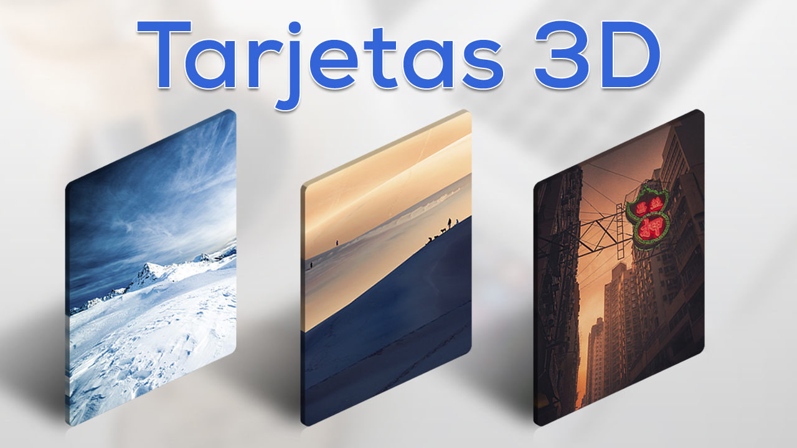

Desarrollamos e implementamos servicios web y aplicaciones móviles para PyMES que hacen de la experiencia en el trabajo, la mejor. Con soluciones como e-commerce, e-shop, web pages, web apps, y web portals, conseguimos que hagas lo que quieres hacer con y para tus clientes y colaboradores de forma rápida, sencilla y a un costo competitivo.
Nos esforzamos por crear productos que ayuden a optimizar los procesos de negocio y comunicación de tu empresa.
Te ofrecemos una combinación de amplios conocimientos y experiencia en el sector, soluciones prácticas, ideas innovadoras y conocimientos globales en servicios web para crear y administrar las funciones de tu empresa de manera eficiente, rápida y a bajos costos y así, impulsar el crecimiento de tu PyME.
Proveer app's móviles y servicios web sofisticados a la medida de PyMEs y ONGs de México y Latinoamérica para optimizar sus procesos y contribuir al desarrollo de la competitividad a través de consultoría personalizada.
Ser una empresa reconocida y recomendada por profesionales, empresas, organizaciones e instituciones, por la calidad de los servicios web y soluciones informáticas que implementamos a través de nuevas metodologías y técnicas que dan valor al negocio de nuestros clientes.
Las soluciones de High Technologies ayudan a las PyMES y ONGs a simplificar sus procesos de negocio permitiéndoles adaptarse de forma rápida al ambiente global de internet para mejorar el desempeño y responder a nuevas oportunidades. Nuestras soluciones están orientadas a PyMEs y ONG's que:
Buscan vender productos o presentar sus servicios en internet.
Quieren tener presencia en internet y aumentar sus ingresos a través de un sitio web o plataforma de e-commerce.
Promuevan sus causas para un bien común.
Necesitan un sitio web o herramientas de software para mantener e incrementar su competitividad frente a la competencia.
Desean mejorar la calidad y reducir tiempos y costos para lanzar nuevos productos y servicios en internet o a través del correo electrónico.
Pretenden reducir costos por medio del uso de una plataforma única para la gestión de su información y comunicación.
Aspiran a mejorar y unificar la información entre sucursales en diferentes ubicaciones del país.
Accesibles: Ofrecen acceso a la información de manera fácil.
Confiables: La información se almacena y se muestra de forma correcta entregando resultados esperados.
Consistentes: Siempre trabajan igual.
Compatibles: Son usados desde cualquier dispositivo, sistema operativo y navegador por igual.
Implementación rápida: Funcionando en el menor tiempo posible.
Disponibles: Siempre están cuando se necesiten.
Estables: Productos que están en funcionamiento constante sin caidas o interrupciones.
Optimizados para móviles: Son vistos en moviles y tablets de manera óptima.
Rentables: La inversión tiene un retorno positivo.
Seguros: La información está protegida y es privada.